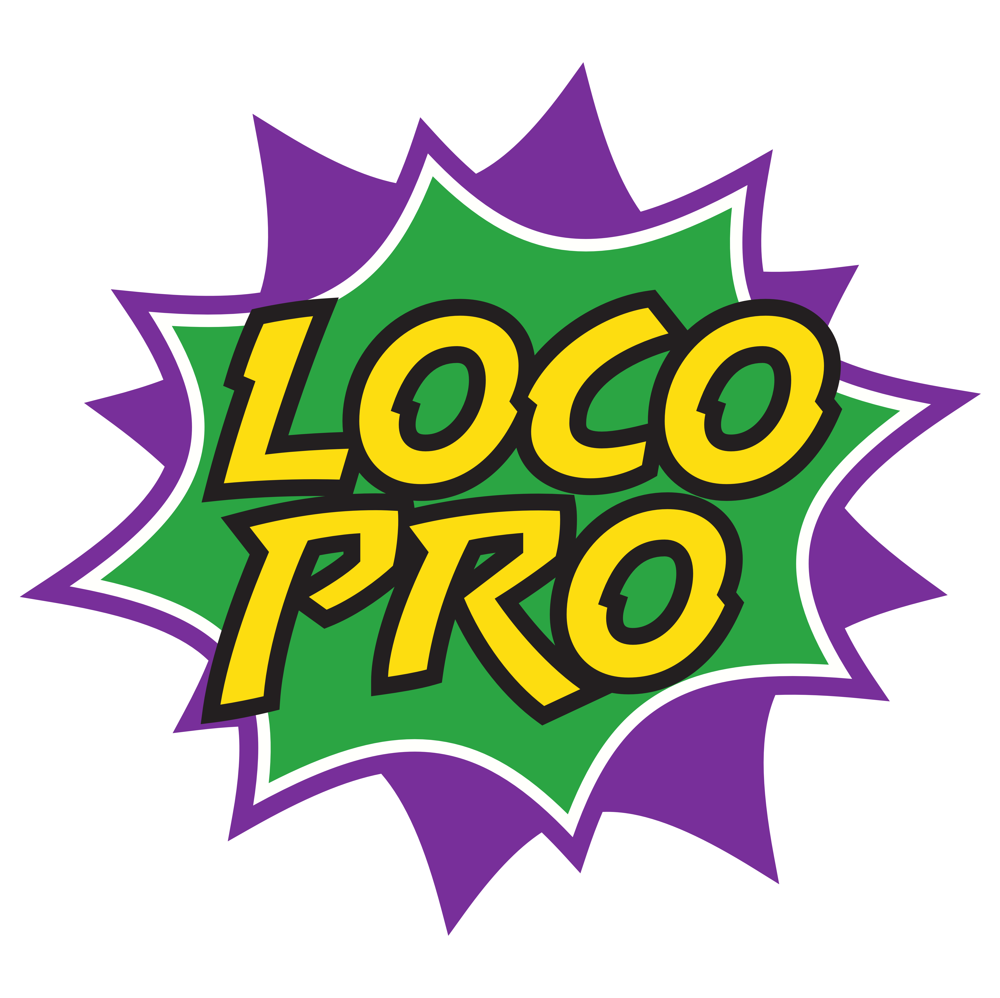
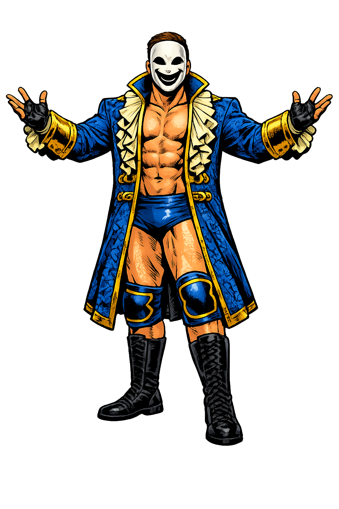
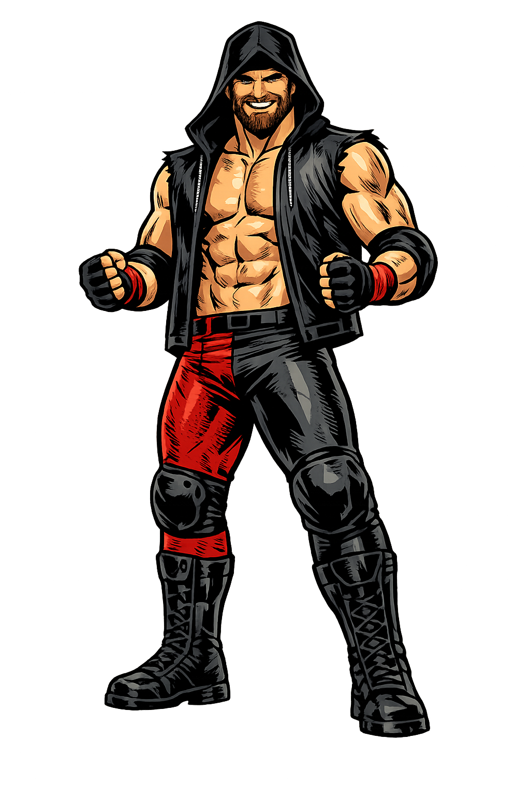

Latest fight package
Hero copy and CTAs route visitors toward video first instead of making them decode the lore cold.
Independent wrestling from Longmont, Colorado
Follow the fight, pick your side, and catch the next chapter. This is a serialized wrestling universe with event sites, match highlights, faction rivalries, games, and ticket links gathered into one kinetic brand hub.

Watch paths
The demo uses real LoCo Pro art with motion layers that can be reused for YouTube bumpers, event pages, match-card teasers, and game promos.
Hero copy and CTAs route visitors toward video first instead of making them decode the lore cold.
Each chapter gets a strong card with one job: move fans to event details or tickets.
Faces, faction colors, and belt imagery do the selling. Motion supports the art, not the other way around.
Event sites
Keep the main page as the router while event microsites carry the details, tickets, legal copy, and social preview art.
Roster gravity
A fan should not need a paragraph before they feel the conflict. Lead with characters, then let cards and timelines explain the stakes.

Nicky Hyde
Zeak GallentStory spine
Founding families, old alliances, and the seeds of faction power.
The original public chapter anchors the modern LoCo Pro story.
Gauntlets, contracts, substitutions, and title consequences collide.
The event router sends fans to the next live chapter.
Mainpage demo